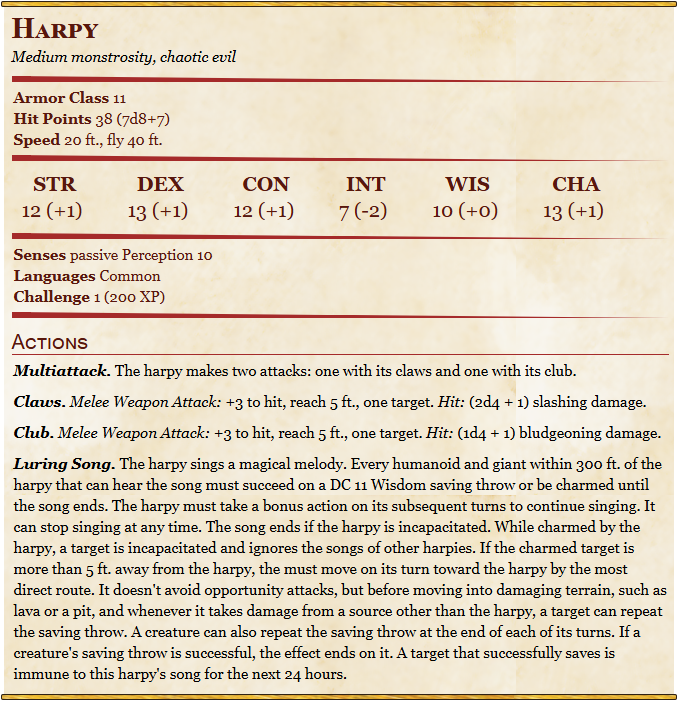

DM info Campagna
Se siete arrivati qui in qualche modo chiudete la pagina grazie xD
Riassunto:
Dopo una lunga e dolorosa escursione al livello superiore di Undertow riuscite a consegnare a Rain la scatola datavi da Maelor. In un primo momento venite
ricompensati con vaghi ringraziamenti e vaghi tentativi di spigazione da parte di Rain che in definitiva si blocca e si scusa per i disagi che vi sono
stati arrecati.
Una volta tonrati alla galleria di Squid, la taverna dove avete alloggiato, vi raggiunge una delle guardie e vi da, da parte di rain, un sacchettino pieno
di monete d'oro e un anello, che emana la stessa aura malvagia della scatola e dell'arena.
E ci siamo lasciati con la partenza da Undertow sulla nave trovata da Rahiim, con direzione Liross
Sessione:
Giorno 3:
A harpy stealthily shows up behind whoever is directing the boat. It will sing with the intention of only affecting the one behind the helm.
If affected by the song, that person is ordered to crash the boat against a near rock coming out from the sea. By the time someone notices something is wrong
(or if that person makes the saving throw), 2d4 harpies come down from the skies with a negotiation. If the captain of the ship is to give a number of crew
members equal to the number of harpies, they will take those people and leave everyone else (boat included) alone.
Giorno 6:
From the depths below, a dissonant loud noise is heard. A gargantuan white whale shows itself curiously, wanting to see who is on the surface.
This isn’t intended to be a combat scenario as the whale is just playing and goofing around. However, if you like, you can make the whale jump,
creating great waves, or let the players ride it for a while.
Segue la nave per qualche ora, scherzosamente urtandola di tanto in tanto o sfiatando per dare deliberatamente fastidio ai marinai.
Dopo un'pò la si sente nuovamente cantare, //Insight DC 15// sembra spaventata, e allontanarsi velocemente nella direzione opposto rispetto a quella dove state
andando. Allo stesso tempo chi ha la borsa contenente l'anello inizia a sentire un ronzio fastidioso e costante, una specie di allarme.
Dopo qualceh minuto qualcosa di grosso colpise lo scafo della nave che inizia a perdere velocità. Un'enorme testa serpentina emerge dalle onde, file di denti che
raggiungono facilmente la grandezza di un torso umano e squame nere lungo tutto il lungo corpo serpentino.
Al primo turno di fight, svariati sea spawn abbordano la nave, 4 nella zona dei giocatori. Alla fine del quale Tutti devono fare un TS DEX DC 14 o cadere
proni mentre il serpente scuote la barca.
Alla fine del secondo round TS COS DC 14 o 3d10 cold, il serpente usa il suo soffio sopra la barca, facendo cadere gelida brina lungo tutta la sua
lunghezza.
Alla fine del terzo round l'attenzione del serpente è dirottata e lasca andare la nave. Il fight prosegue con i sea spawn.
Alla fine del quarto o 5 round si vede il sea serpent combattere con kraken in lontananza. Si può vedere uan chiara somiglianza tra le squame del serpente
e le scaglie nere che stanno iniziando a crescere lungo i tentacoli del kraken.
NPC:
-Barlus “Tre Dita”
Ruolo: marinaio veterano
Razza: Umano, imperiale
Personalità: sfrontato, parla troppo, sempre ottimista
Peculiarità: parla quasi sempre tramite metafore marine
Frase tipica: “Non fate rumore quando dormete, o gli spiriti del sottoscoglio penseranno che siamo vivi.”
Gancio:
maledizione che si narra essere caduta sul prossimo porto
-Capitano Borogg
Ruolo: Capitano
Razza: Mezz'orco
Personalità: prudente, superstizioso
Peculiarità: ha solo tre dita per mano e si vanta del perché
Frase tipica: “Questa l’ho persa rubando un diamante. Questa in un duello. Questa? Questa l’ho tagliata io per fare scena.”
Gancio:
racconta tante storie, ma 1 o 2 sono vere
sa qualcosa sulla regina pirata
perde sempre al gioco d’azzardo → chiede soldi ai PG
-Erpice
Ruolo: pescatore di bordo
Personalità: lento, quasi apatico
Peculiarità: parla con i pesci e crede che rispondano
Frase tipica: “Questa l’ho persa rubando un diamante. Questa in un duello. Questa? Questa l’ho tagliata io per fare scena.”
Gancio:
dice che il mare "sta ruggendo là sotto"
consegna un biglietto "proveniente da una manta messaggera" ma è bianco
Ha partecipato alla battaglia del Triangolo, ex scudo grigio
Sheets
